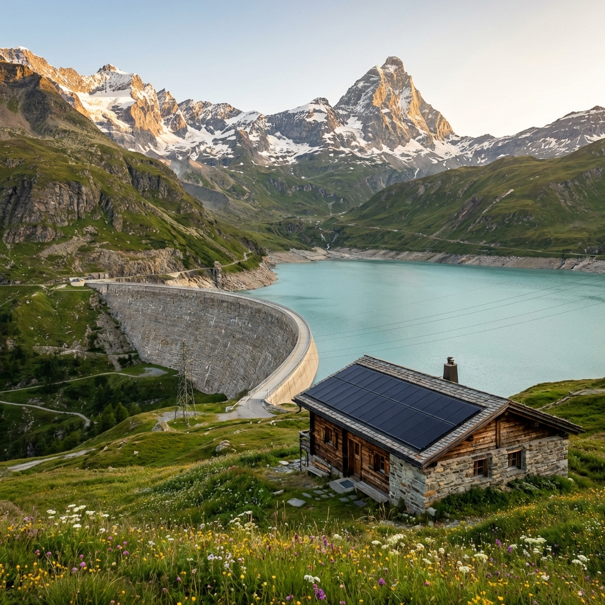

Energiespeicher Schweiz
Vom "Wasserschloss Europas" zur Batterie-Nation? Aktuelle Projekte und Marktentwicklungen.
Wandel: Der Batterie-Boom
Mit Preisschwankungen Geld verdienen
Weil immer mehr Sonnenstrom produziert wird, schwanken die Preise stark: Mittags ist Strom billig, abends teuer. Schweizer Firmen wie die BKW oder Axpo bauen deshalb grosse Batterien. Sie laden sie, wenn der Strom günstig ist, und verkaufen den Strom, wenn er teuer ist.
Projektrealisierung
Batterien sind viel einfacher zu bauen als Windräder oder Stromleitungen. Man braucht oft nur eine einfache Bewilligung und keine langen Umwelt-Prüfungen (ausser wegen Lärm durch Lüfter). Die BKW will schon 2028 erste Anlagen starten.
Konkrete Projekte & Infrastruktur
Leuchtturmprojekt Wallis
Der Energieversorger Enalpin hat in Stalden (VS) eine 8-MW-Batterie installiert. Das Projekt zeigt die Geschwindigkeit der Entwicklung: Vom Bewilligungsverfahren (5 Monate) bis zur Lieferung der Komponenten aus China (9 Monate) verging kaum Zeit. Die Kosten belaufen sich auf ca. 6 Millionen Franken. Dies ist möglich, da Lithium-Eisenphosphat-Batterien (LFP) massiv günstiger geworden sind.
Datenlücke & Netzstabilität
Trotz Aufbruchstimmung fehlt der Gesamtüberblick: Es gibt derzeit keine zentrale Institution, die erhebt, wie viele Speicher effektiv am Netz sind. Für Swissgrid sind Batterien erst ab 150 MW direkt relevant – eine Schwelle, die bisherige Projekte noch nicht erreichen. Dennoch sind diese dezentralen Speicher essenziell für die lokale Netzstabilität.
Warum Lithium-Eisenphosphat (LFP)?
Schweizer Versorger setzen primär auf LFP-Technologie. Gründe dafür sind:
- Robustheit: Halten länger als normale Akkus.
- Sicherheit: Brennen kaum.
- Preis & Umwelt: Ohne Kobalt und viel günstiger durch Massenproduktion.